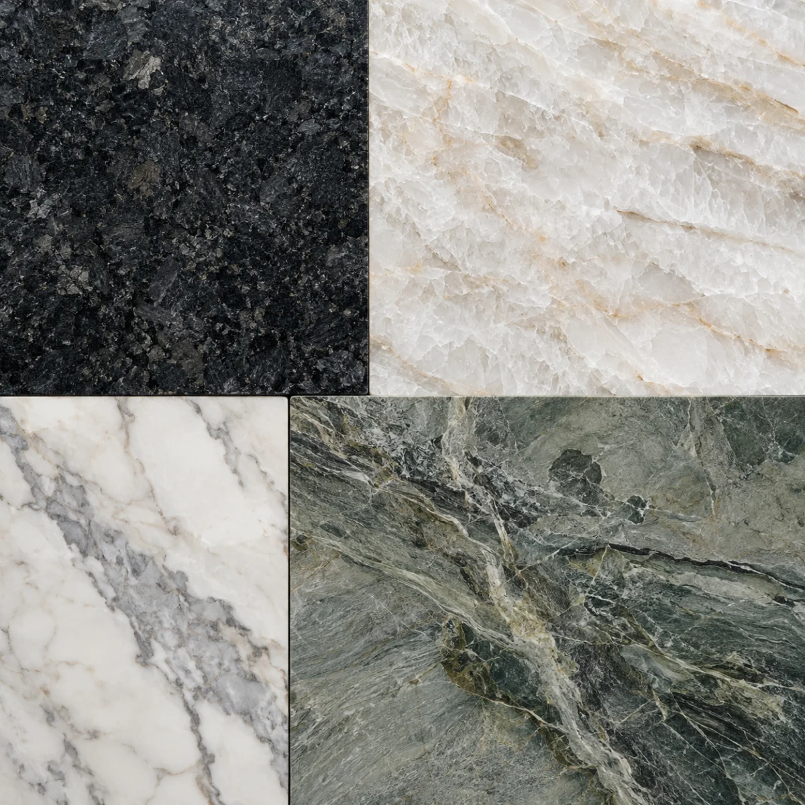
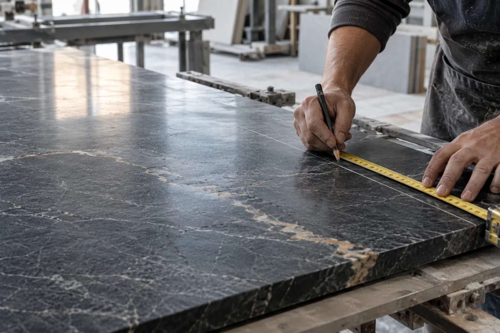
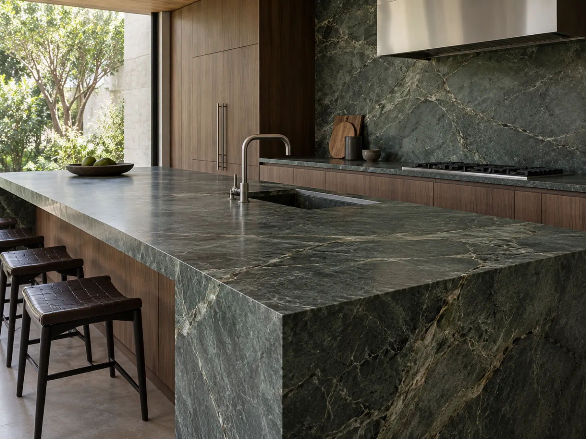

Para quem compra
Preço de referência no próprio ritmo
Escolhas explicadas em contexto
Resumo antes de chamar a loja
Mais segurança para começar a conversa.Seu cliente escolhe a pedra, informa as medidas e envia uma estimativa organizada para o WhatsApp da marmoraria.
Simular orçamentoDa primeira medida à conversa comercial, sem perder contexto.
Experimente o fluxo como seu cliente. Os valores são ilustrativos e seguem a tabela configurada nesta demonstração.

Grão aparente, leitura sóbria e resistência para o uso diário.

Primeiro, a pedra. O cliente compara materiais por aparência e faixa de preço, sem navegar por uma lista abstrata.
Depois, as medidas. Comprimento, profundidade e quantidade entram com limites claros para evitar valores impossíveis.
Na sequência, os detalhes. Cuba, posição, frontão, borda e instalação entram no mesmo raciocínio de orçamento.
Por fim, o atendimento. A estimativa vira uma mensagem organizada para o WhatsApp, pronta para conferência e continuidade.
Preço de referência no próprio ritmo
Escolhas explicadas em contexto
Resumo antes de chamar a loja
Mais segurança para começar a conversa.Material e medidas já organizados
Adicionais descritos sem ambiguidade
Mensagem pronta no WhatsApp
Mais contexto desde o primeiro contato.Preços definidos pela marmoraria
Regras aplicadas de forma consistente
Estimativa separada da validação final
Mais previsibilidade sem prometer o que depende de conferência.
Deixe o cliente avançar sozinho até o ponto em que sua equipe agrega mais valor: conferir, orientar e fechar.
Simular orçamento